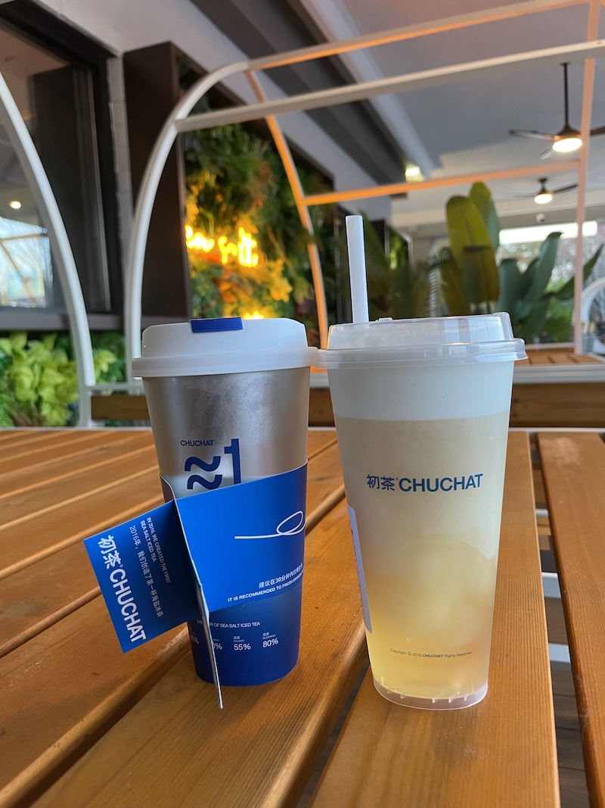
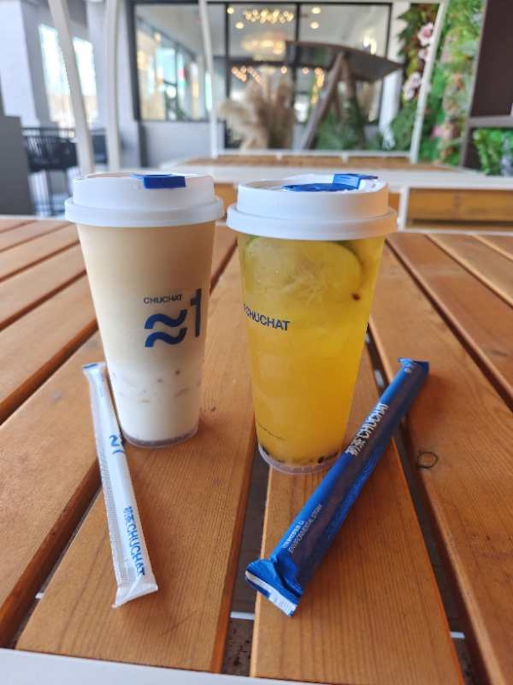

Type: 🧋 Boba / Tea
Address: 6000 Medlock Bridge Pkwy F200, Johns Creek, GA 30097
Hours: 11:30 AM – 10:00 PM

My go-to order is the Oolong Milk Tea with cheese foam on top. The deeply roasted Oolong tea is blended with creamy milk, giving it an earthy, smooth flavor. I like adding cheese foam because it adds a savory-sweet layer to balance the tea's taste.
Oolong tea is a traditional Chinese tea that's partially oxidized, giving it a flavor profile that sits between green and black tea. This flavor is toasty, floral, and slightly fruity.
📝 Note: They also serve: Sichuan and Snow Cheese Wings, Buldak Sandwich, and Seaweed Meat Floss Roll.
© 2026 Duluth Drinks Guide